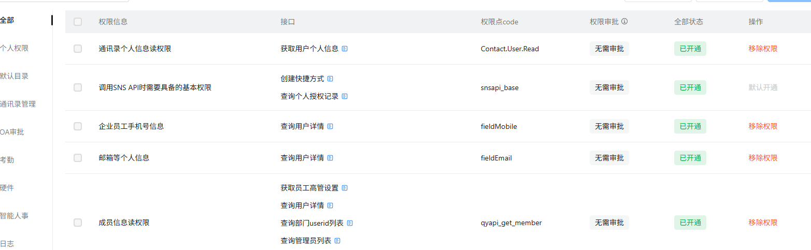

概述
为 Authentik 添加钉钉作为第三方登录源（OAuth Source），用户可直接使用钉钉扫码/账号登录。由于钉钉开放平台已提供标准的 OAuth 应用模板，整个过程通过 Web 向导即可完成，只需填写应用的 AppKey 与 AppSecret。
一、钉钉开放平台侧准备
- 登录钉钉开放平台，创建企业内部应用（或第三方应用）。
- 在应用的「安全设置」中获取 AppKey（Client ID）和 AppSecret（Client Secret）。
- 设置回调域名为 authentik 的访问地址，例如
auth.zjtdemo.cloud，并在重定向 URL 中填入 authentik 生成的回调地址，格式为：
https://<authentik 域名>/source/oauth/callback/<slug>/
其中 <slug> 与下一步在 authentik 中创建的 Source slug 必须完全一致。
注意：AppSecret 属于敏感凭据，不要提交到版本库或公开渠道。
二、在 Authentik 添加钉钉源
进入 Customization → Sources → Create，在类型列表中选择 Dingding（钉钉）模板。该模板已预置钉钉的授权、令牌与用户信息端点，无需手工填写 URL。
按向导填写：
| 字段 | 填写内容 |
|---|---|
| Name | Dingding |
| Slug | dingding（与回调 URL 中的 slug 一致） |
| Consumer key | 钉钉 AppKey |
| Consumer secret | 钉钉 AppSecret |
保存后，authentik 会生成回调 URL；把它回填到钉钉开放平台的重定向 URL 中并确认生效。

三、挂到登录页
新建的 Source 默认不会出现在登录界面。进入：
Flows and Stages → Flows → default-authentication-flow
→ Stage Bindings → default-authentication-identification → Edit Stage
→ Source Settings → Available Sources
把 Dingding 从 Available Sources 移到 Selected Sources。如需显示文字标签，勾选 Show sources' labels，否则登录页只显示图标。
保存后，用无痕窗口打开登录页，应能看到钉钉登录入口。
四、验证与排障
- 点击钉钉登录，确认跳转到钉钉授权页并正常回跳。
- 若回跳时报
redirect_uri mismatch，检查钉钉侧重定向 URL 与 authentik 回调地址是否逐字符一致（含协议、端口、结尾斜杠）。 - 若提示应用无权限，检查钉钉应用是否已发布/启用，且授权范围包含获取用户基本信息。
附件下载
- wemcomdingding.zip — 本文配套部署包，含钉钉/企业微信集成脚本（dingtalk.py、wecom.py、deploy.sh、diagnose_dingtalk.py 等）
本文由 WorkBuddy AI 编辑整理。